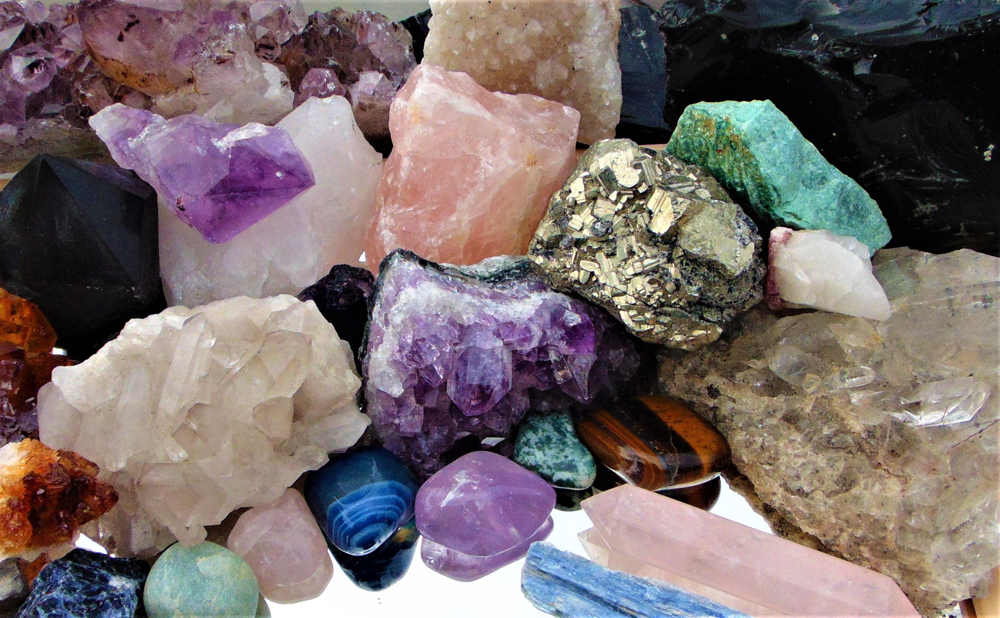

GET TO KNOW YOURSELF
Want to find a better understanding of why you are the way you are? Want to learn about the different things assosiated with when you were born? What traits were already decided before you developed them? Click either the Crystal image or Zodiac image to learn a little about yourself!
|  |  |